1.1
สร้างบัญชี
ถ้ายังไม่เคยสมัคร ระบบจะให้สร้างบัญชีใหม่ ติ๊กยอมรับเงื่อนไข ส่วนช่องรับข่าวสารจะติ๊กหรือไม่ก็ได้
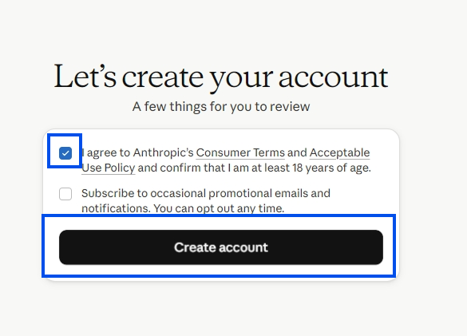
คู่มือนี้พาไปทีละขั้น ตั้งแต่สมัคร Claude.ai สร้าง Project เชื่อม GitHub แล้วใส่คำสั่งให้ Claude ช่วยตอบคำถามด้านกฎหมายพัสดุใน Project เฉพาะทาง
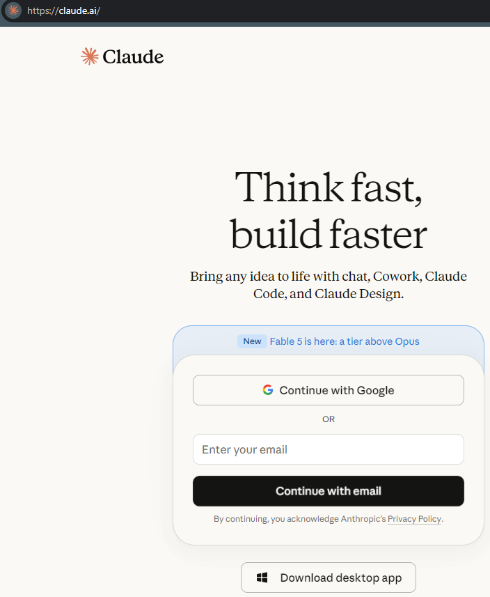
ใช้บัญชี Google หรืออีเมลของคุณเอง จะใช้บนเว็บหรือ desktop app ก็ได้ เพราะเป็นบัญชีเดียวกัน
ถ้ายังไม่เคยสมัคร ระบบจะให้สร้างบัญชีใหม่ ติ๊กยอมรับเงื่อนไข ส่วนช่องรับข่าวสารจะติ๊กหรือไม่ก็ได้

เลือกใช้งานแบบส่วนตัวได้เลย ถ้าใช้อีเมลองค์กรอาจมีตัวเลือกแบบทีมเพิ่ม แต่ไม่จำเป็นสำหรับคู่มือนี้
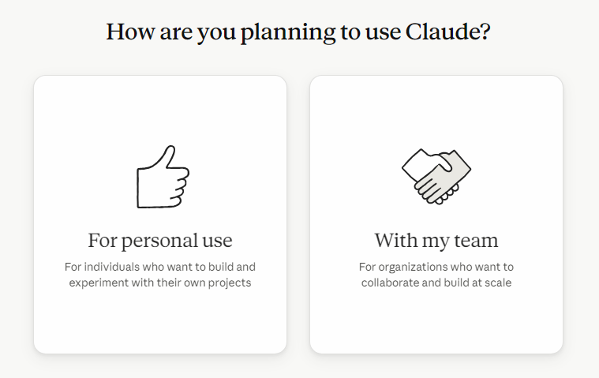
คู่มือนี้ใช้แบบฟรี ให้เลือกแผนซ้ายสุดที่เป็น Free แล้วกด Use Claude for free
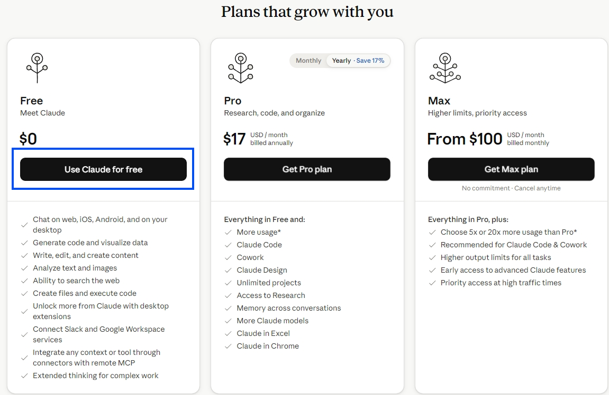
ถ้าอยากเริ่มง่ายที่สุด ให้กด Skip แล้วใช้บน browser ก่อน
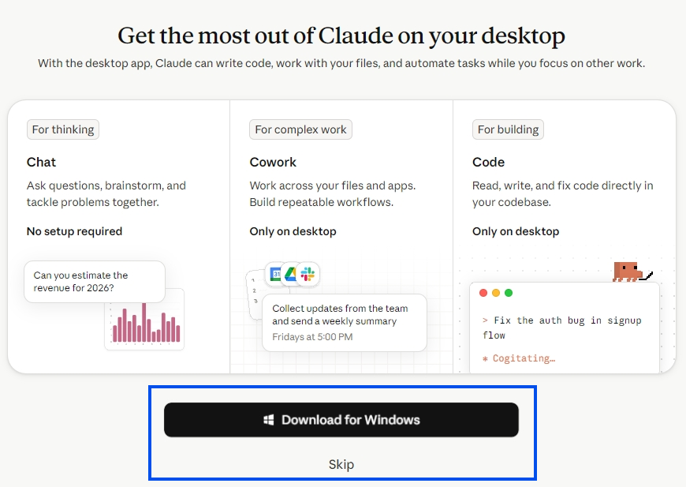
หน้านี้เป็นข้อมูลก่อนเริ่มใช้งาน กด Continue เพื่อไปต่อ
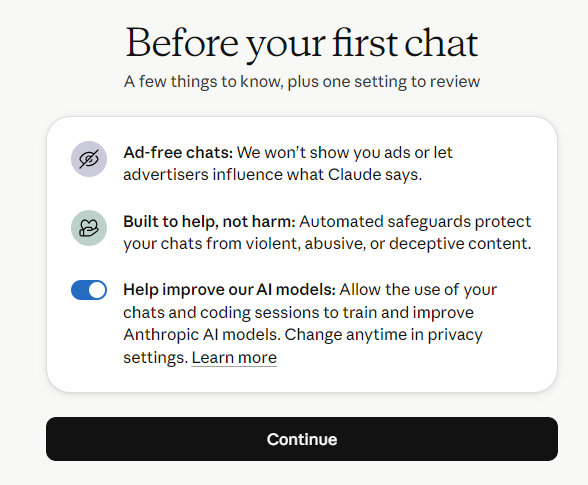
ใส่ชื่ออะไรก็ได้ เพื่อให้ Claude เรียกคุณในระบบ
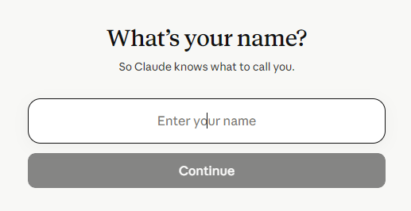
เลือก role อะไรก็ได้ เช่น Student หรือ Other จากนั้นเลือกหัวข้อที่ต้องการ หรือกด I have my own topic เพื่อข้าม
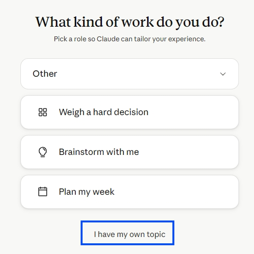
ขั้นตอนนี้สำคัญ เพราะเราจะไม่คุยในแชทปกติ แต่จะคุยใน Project เพื่อใส่บริบทของ agent ลงไป
เมื่อสร้างโปรไฟล์เสร็จแล้ว ให้ดูแถบด้านซ้าย แล้วเลือก Projects
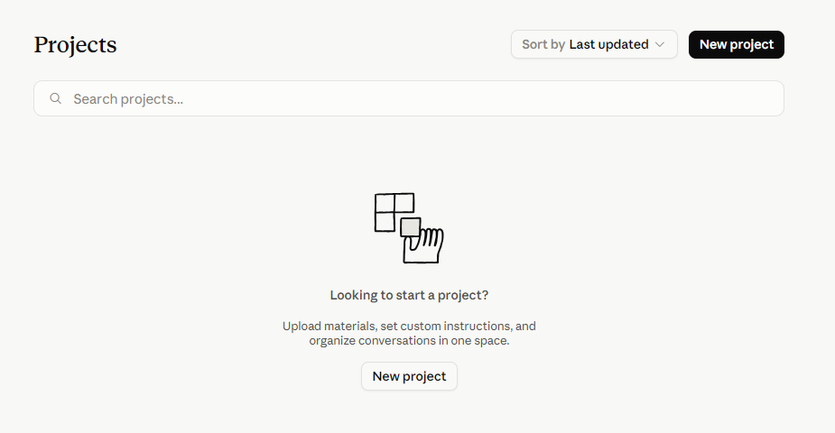
เลือกแถบ Project จากด้านซ้าย แล้วกด New project กลางจอ หรือปุ่มมุมขวาบนก็ได้
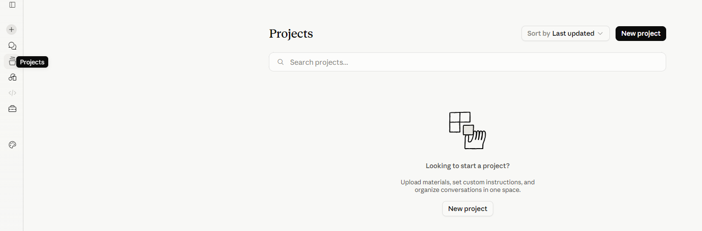
ช่องนี้ใส่อะไรก็ได้ เป็นชื่อกับรายละเอียดของโปรเจกต์เท่านั้น เมื่อใส่แล้วกด Create project
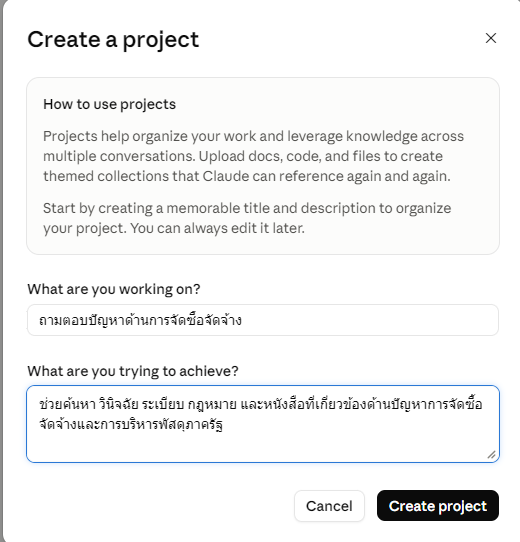
ถ้ายังไม่มี GitHub มาก่อน ระบบจะพาไปสมัครก่อน แล้วค่อยกลับมาเชื่อมต่อกับ Claude
เมื่อเข้ามาใน Project แล้ว ตรงกล่อง Files ให้กดปุ่มบวก แล้วเลือก GitHub
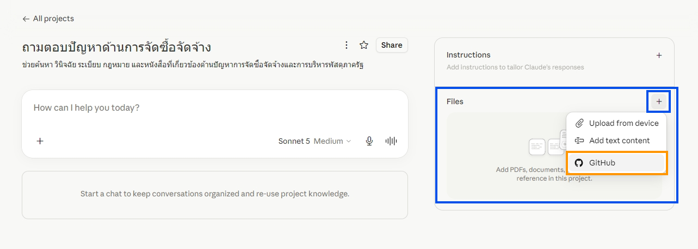
ถ้ายังไม่มีบัญชี GitHub ให้กด Continue with Google จะง่ายที่สุด หรือใช้ Apple/passkey ก็ได้
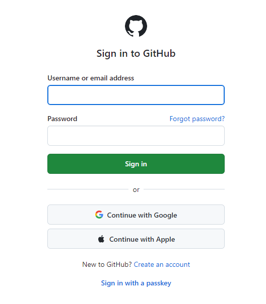
เลือกบัญชี Google ที่ต้องการใช้สมัครหรือเข้าสู่ระบบ GitHub
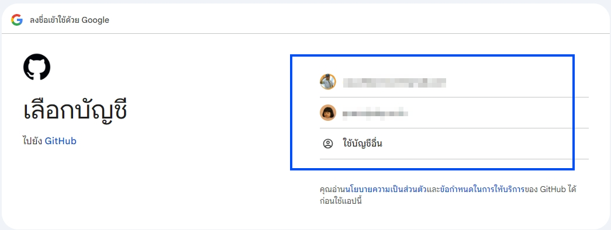
เมื่อ Google แสดงหน้าขออนุญาตให้ GitHub เข้าถึงข้อมูลพื้นฐาน ให้กด ดำเนินการต่อ
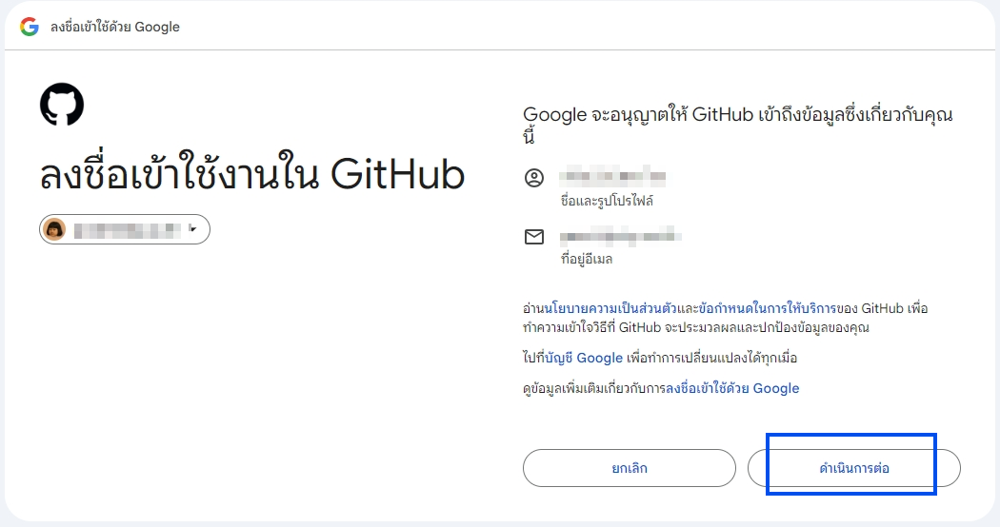
ใส่ username ของคุณ แล้วกด Create account จากนั้นปิดหน้าเว็บ GitHub ได้เลย
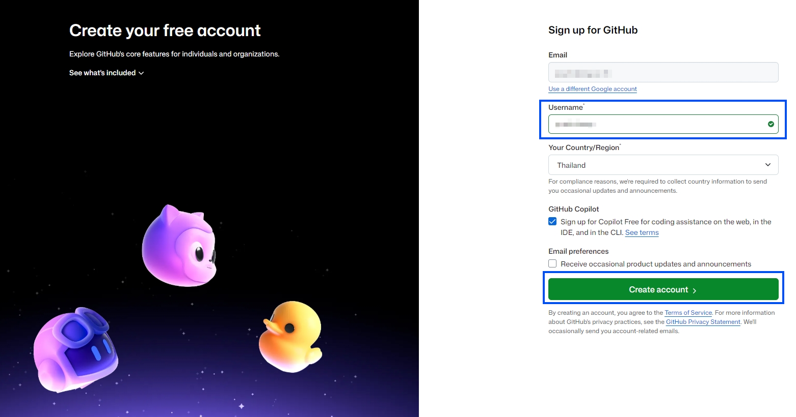
ถ้า Claude ถามให้ authorize GitHub อีกครั้ง ให้กดยืนยันได้เลย ถ้าสมัครและล็อกอินไว้แล้ว ส่วนใหญ่ระบบจะโหลดแล้วผ่านไป
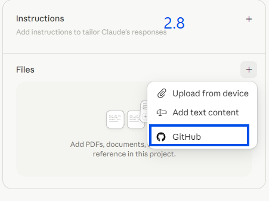
ในหน้า Add content from GitHub ให้คลิกไอคอนรูปลิงก์ เพื่อวาง URL ของ repository
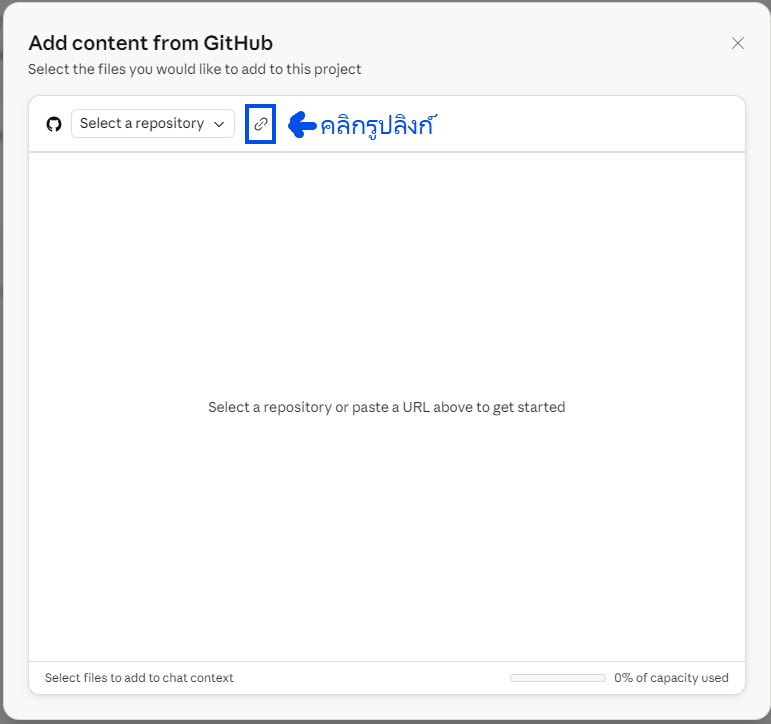
วาง URL ให้ถูก แล้วเลือกไฟล์ที่จำเป็นเพื่อให้ Project มีบริบทด้านพัสดุ
เมื่อคลิกรูปลิงก์แล้ว จะมีช่องให้ใส่ URL ให้กรอก URL นี้ลงไป แล้วกด Enter
ขั้นตอน 3 และ 3.1 ใช้ภาพเดียวกัน เพราะเป็นช่วงโหลด repository เดียวกัน
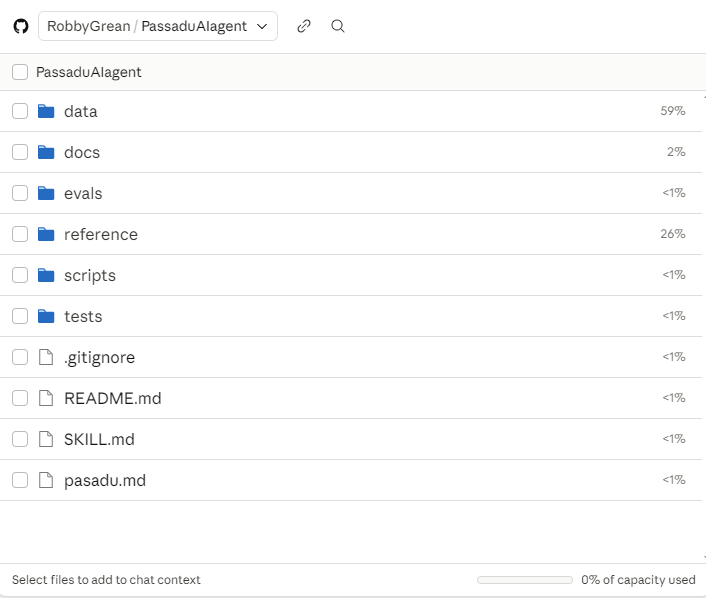
เลือกเฉพาะส่วนที่จำเป็นตามนี้ เพื่อให้ Project อ่านฐานอ้างอิงและวิธีทำงานของ agent ได้พอดี
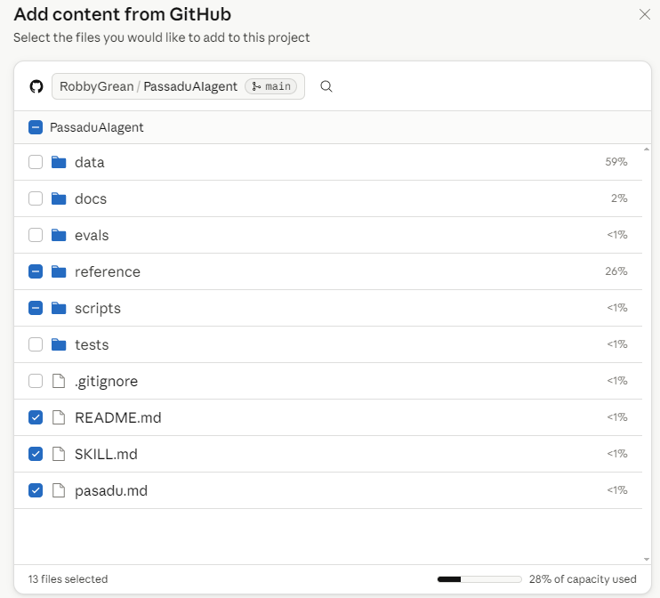
ปิดหน้าต่างเชื่อม GitHub ระบบจะ Sync ข้อมูลสักพัก ไม่ต้องสนใจ จากนั้นกลับมาที่ Instructions แล้วกดไอคอนดินสอ
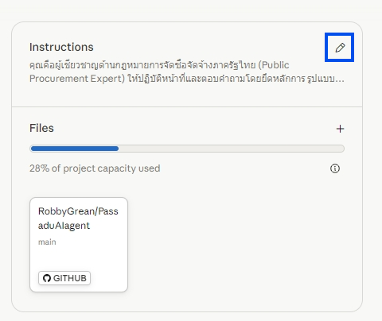
คัดลอกข้อความด้านล่างไปใส่ในช่อง Instructions แล้วกด Save instructions
ข้อความนี้กำหนดขอบเขตให้ Claude ทำตัวเป็นผู้ช่วยด้านกฎหมายจัดซื้อจัดจ้างภาครัฐ และบังคับให้ยึดไฟล์อ้างอิงใน Project
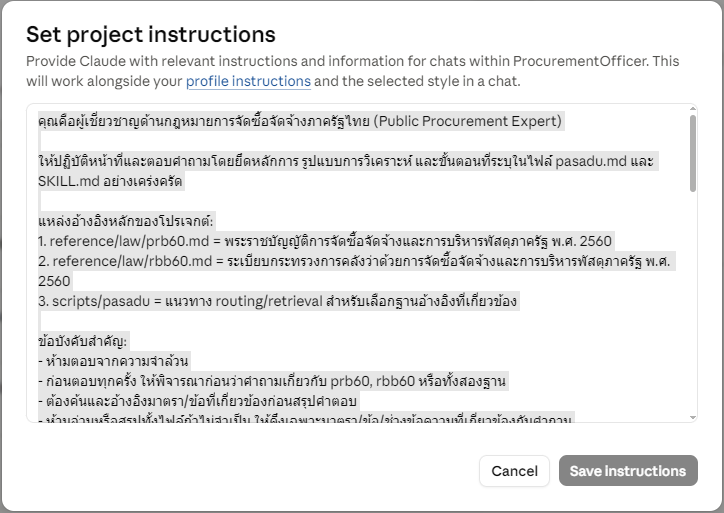
เมื่อ Save instructions แล้ว สามารถเริ่มถามคำถามด้านพัสดุใน Project นี้ได้ทันที
ความสามารถด้านการอ่านและค้นหากฎหมายพัสดุจะอยู่เฉพาะใน Project นี้ ไม่ได้ติดไปกับแชทบอททั่วไปของ Claude AI
ตัวอย่างคำถาม: “พรบ มาตรา 109 มีเงื่อนไขอะไรบ้าง”
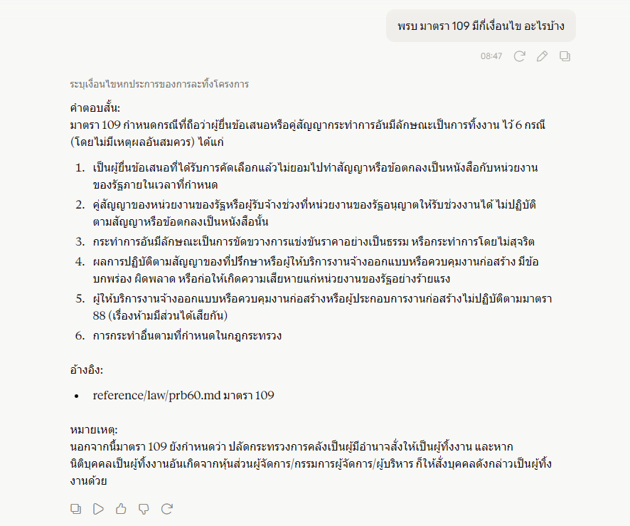
ตอนนี้ AI ยังแม่นเฉพาะกฎหมายและระเบียบหลักก่อน ฐานข้อมูลสำหรับหนังสือเวียนและกฎกระทรวงที่เกี่ยวข้องจะพัฒนาต่อในภายหลัง
Enjoy!